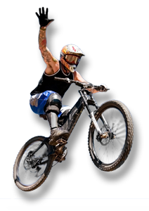
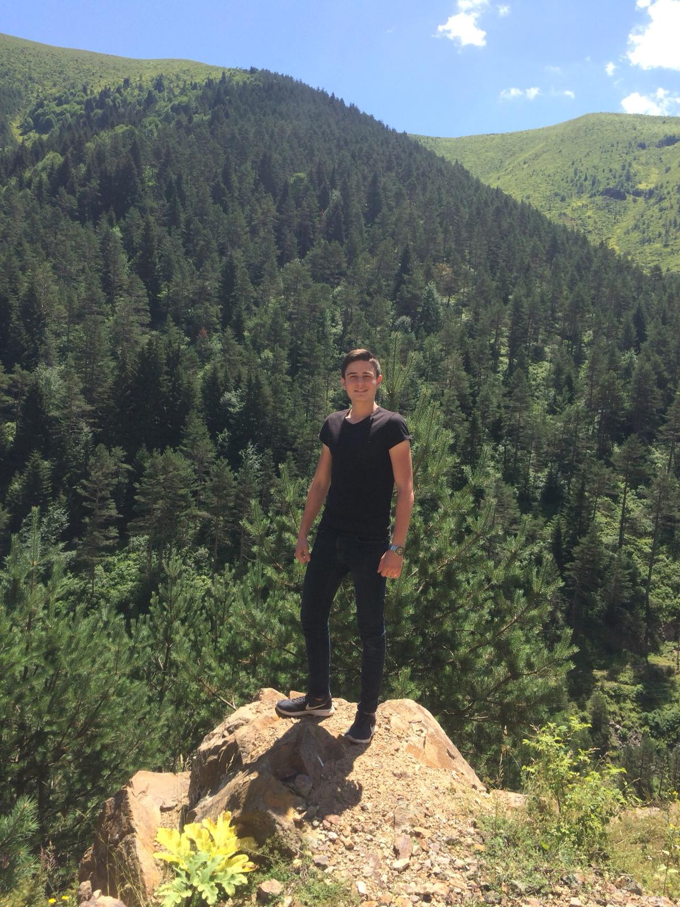

"2004 yılında kurulan AB, bisikleti bir ulaşım aracı ya da hobi değil, “hayat tarzı” olarak görenler için ortaya koyduğu özel seçeneklerle yola çıktı! AB, geride kalan 15 seneden bu yana Türkiye'nin bisiklet alanında gurur kaynağı olmaya devam ediyor. 
KURUCU KİŞİ
